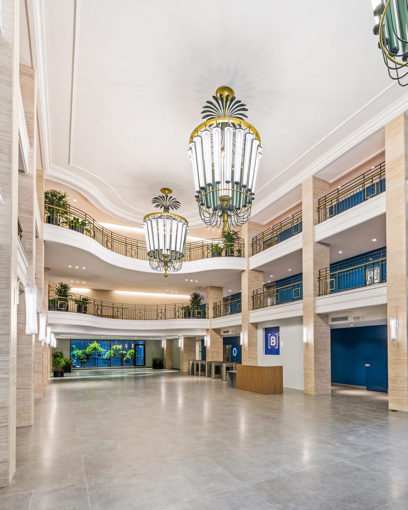
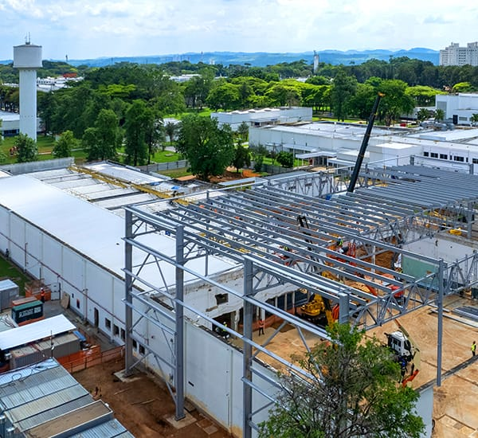
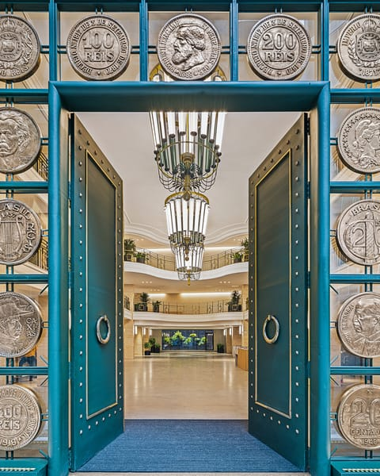

Athié Wohnrath põe a IA para conferir a papelada dos terceirizados e contar equipamentos em planta de obra
A construtora passou a validar holerites e cartões de ponto de fornecedores com 97% de acerto e poupa R$ 40 mil por mês nessa conferência. Na engenharia, o levantamento de uma planta caiu de três horas para 25 minutos.

Nenhum operário terceirizado entra num canteiro da Athié Wohnrath sem a documentação em dia. A construtora paulistana, fundada em 1994 e responsável por mais de 32 milhões de metros quadrados de escritórios, fábricas, hospitais e escolas, trabalha com mais de 10 mil terceirizados. Cada fornecedor manda os papéis de cada funcionário: holerite, cartão de ponto, certificado de treinamento, programa de gerenciamento de risco. Uma equipe da construtora conferia tudo à mão, documento por documento.
Hoje, holerites e cartões de ponto passam primeiro por um sistema construído pelo Studio Artemis, empresa de tecnologia que desenvolve sistemas de IA para indústria e construção. Comparado ao veredito da equipe que fazia a conferência, o sistema acerta 97% das decisões. Pelas contas do Studio Artemis, a mudança tira R$ 40 mil por mês do custo da conferência, e isso considerando só esses dois documentos.
A matéria em números
- Economia por mêsR$40milna conferência de holerite e cartão de ponto de terceirizados
- Acerto97%das decisões iguais às da equipe que conferia os documentos
- Planta levantada25minde processamento. Na contagem manual, cerca de 3 horas de engenheiro
- Terceirizados10milnas obras da construtora, cada um com a própria pasta de documentos
O sistema de documentos, chamado WControl, foi o primeiro de dois que a construtora pôs em produção com o Studio Artemis. O segundo lê plantas de arquitetura e devolve a lista de equipamentos que vai para a cotação dos fornecedores.
Mil páginas e uma assinatura recortada
A conferência parece simples até o primeiro lote. Alguns documentos passam de mil páginas. Outros chegam como foto de celular, quase ilegíveis. Parte deles só faz sentido cruzada com outra peça, como o programa de gerenciamento de risco do fornecedor, que precisa bater com a situação de cada funcionário listado nele. E existe a fraude: o prestador que recorta a imagem de uma assinatura válida e cola em outros documentos para ganhar tempo.
A Athié já havia tentado automatizar a tarefa por conta própria. Depois de oito meses, o sistema interno não tinha chegado à produção. O desenho previa, nas palavras de Willy Azevedo, líder técnico de IA do Studio Artemis, “um prompt mágico que faz tudo”: o documento entraria numa única instrução para a IA, e o veredito sairia do outro lado.
O contato com o Studio Artemis veio pelo LinkedIn, e o pedido da área de inovação da construtora era amplo: “implementar inovação na empresa”. O contrato foi fechado por horas, sem escopo definido e com a possibilidade de cancelamento se o resultado não viesse. Antes de propor qualquer sistema, a equipe fez três perguntas: quais são as áreas da empresa, que processos mais pesam em cada uma e o que já foi tentado. A conferência de documentos saiu desse mapa como a primeira frente.
Um gabarito antes da máquina
O primeiro pedido do Studio Artemis foi uma amostra: documentos que a equipe da Athié já tinha conferido, com a decisão de cada conferente registrada ao lado. Essa amostra virou o gabarito. O sistema rodava sobre ela, uma planilha punha a resposta da IA ao lado da resposta humana, e cada divergência era examinada. Quando a IA errava, a regra mudava. Quando o erro era da pessoa, o caso saía do gabarito.
A tela que o gestor usa hoje só foi construída depois que holerite e cartão de ponto estabilizaram em 97% de acerto. Documentos longos ganharam um caminho próprio de leitura. A assinatura digital passou a ser validada no serviço do Gov.br, e as imagens de cada PDF passaram a ser separadas e comparadas, o que expõe a assinatura colada em mais de um arquivo. Critérios que se repetem em vários documentos, como a checagem de CPF e CNPJ, viraram regras únicas: o gestor muda num lugar só, e a mudança vale para todos.
Laboratório de teste · reconstituição
Lote 14: holerites, cartões de ponto e certificados
| Documento | Equipe | IA | Resultado |
|---|---|---|---|
| HoleriteFornecedor 1 | Aprova | Aprova | |
| Cartão de pontoFornecedor 1 | Reprovajornada sem intervalo | Reprovajornada sem intervalo | |
| Certificado NR-35Fornecedor 2 | Reprovavencido | Reprovavencido | |
| HoleriteFornecedor 3 | Aprova | Reprovaassinatura idêntica à de outros 3 arquivos | ! |
| Programa de riscoFornecedor 2 | Aprova | Aprova | |
| Cartão de pontoFornecedor 3 | Aprova | Aprova |
5 de 6 iguais ao gabarito. A divergência vai para o gestor, que confere o caso antes de a regra subir para produção.
A peça que mudou a relação com a área foi esse laboratório, embutido no próprio sistema. O gestor sobe um lote de documentos com a resposta certa, roda a IA, vê a comparação caso a caso e decide se a versão nova vai para produção. Nenhuma regra muda sem passar por ali. O gestor responsável pela frente recebeu um prêmio interno da Athié pelo projeto, e os outros tipos de documento entram no sistema em sequência.
Entenda
Por que a conferência só entrou em produção com gabarito
O plano anterior · uma instrução para tudo
Sem uma amostra com a resposta certa, não há como saber se o sistema acerta 60% ou 95% dos casos, e nenhum gestor assina embaixo.
O método que foi a produção · gabarito, regras e laboratório
Quem decide o que sobe é o gestor da área. Cada regra nova passa pelo laboratório antes de valer para os documentos de verdade.
O WControl funciona ao lado dos sistemas da Athié Wohnrath e não tem acesso ao banco de dados da construtora.
A planta que levava três horas
Com o primeiro sistema rodando, a área de inovação abriu caminho até os gestores dos outros setores. Segundo Willy, eles chegaram dizendo: “agora vão resolver todos os nossos problemas”. O orçamento de obras trouxe o problema mais caro de errar.

Antes de uma obra ser orçada, um engenheiro abre a planta de arquitetura e conta tudo o que ela pede: aparelhos de ar-condicionado, metros de duto, cabos, equipamentos. A contagem vira a planilha que os fornecedores cotam. Se o engenheiro conta de menos, a obra sai no prejuízo. Se conta de mais para se proteger, o preço sobe e a concorrência leva o contrato. A equipe já tinha testado um agente de IA de uso geral, e os resultados vinham sem padrão, cada vez de um jeito.
A saída veio do processamento de imagem de satélite. Uma planta tem traço fino demais para ser lida inteira de uma vez, então o sistema a corta em pedaços que se sobrepõem, lê cada pedaço e depois elimina as repetições pelas coordenadas de cada item, como se faz com fotos aéreas muito grandes. O engenheiro sobe o PDF e marca onde estão as tabelas, o desenho, a legenda e o selo. Cada tipo de tabela tem um leitor próprio.
Depois, o sistema cruza o que está nas tabelas com o que aparece no desenho, e é nessa etapa que surge o equipamento que o projetista desenhou e esqueceu de listar. Cada item vem com um grau de confiança: alto quando a etiqueta estava clara, baixo quando a máquina precisou deduzir pelos elementos vizinhos. Na revisão, o engenheiro clica numa etiqueta e o sistema mostra onde ela está na planta.
O que o sistema listou
- Evaporadora cassete 24.000 BTU7alta
- Evaporadora hi-wall 12.000 BTU3alta
- Duto rígido 500 × 300 mm84 mmédia
- Duto flexível Ø 200 mm37 mmédia
- Grelha de retorno18baixa
- AC-05, desenhada e fora da tabela1revisar
O levantamento de uma planta caiu de cerca de três horas de engenheiro para 25 minutos de processamento. O engenheiro continua com a palavra final, só que agora revisa uma lista pronta em vez de contar item por item.
Carta branca
O sistema de plantas, chamado internamente de Supply Map, foi mostrado a um integrante do conselho da construtora e depois ao CEO, que autorizou levar o método a outros setores. Veio também um efeito que ninguém tinha pedido. Como o sistema acusa duto sem medida, a Athié passou a exigir dos projetistas terceirizados que marquem as dimensões em todos os dutos das plantas que entregam.
Nas duas frentes, o Studio Artemis não pediu acesso ao banco de dados da construtora nem mexeu nos sistemas que já existiam. Os documentos e as plantas entram, a resposta sai, e a área de tecnologia da Athié continua cuidando do resto. Segundo Willy, é assim que a equipe se apresenta a qualquer departamento de TI:
Não vamos mexer no seu sistema. Mandam os documentos aqui, processamos, devolvemos a resposta.

Quem é
Athié Wohnrath
Construtora e escritório de arquitetura corporativa fundado em 1994 por Sérgio Athié e Ivo Wohnrath, em São Paulo. Projeta e constrói escritórios, fábricas, hospitais e escolas. Soma mais de 32 milhões de metros quadrados construídos e 109 certificações LEED, segundo a empresa.
Os dois sistemas resolvem problemas que aparecem, com o mesmo formato, em outros setores. Conferir documento contra regra aparece em compras, RH e jurídico de qualquer empresa com muitos terceirizados. Tirar quantidade de desenho técnico aparece no orçamento de instalações elétricas e hidráulicas e na metalurgia. Na Athié, os dois começaram por um diagnóstico da operação, o mesmo que o Studio Artemis agora oferece a outras construtoras e indústrias.